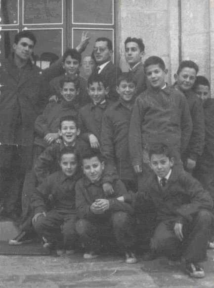

de
Manuel Sánchez Blanco
 |
||
En el centro, agachado, me encuentro yo, a mi derecha Xavi Martínez Sánchez de Neyra y justo por encima de mi, de pié, se encuentra Ardanaz. Con gafas, D. Carlos y a su lado Gordejuela. Me gustaría ponerle nombre al resto que están en la fotografía. Espero que se vayan identificando. Creo que detrás de mi, agachado es Secaduras y Vasco el tercero por la derecha de los que están de pié. |